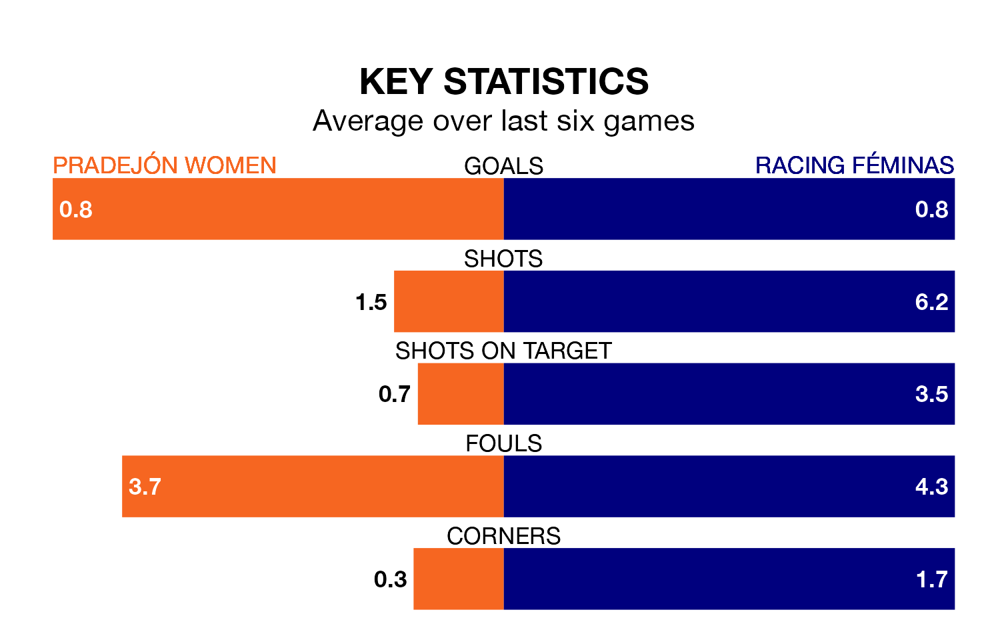

Pradejón Women face Racing Féminas on Sunday looking to secure a first win in six Segunda Federación Femenina games.
Pradejón have lost one and drawn four matches since they last earned three points – against Rayo Vallecano Women on February 18.
They face a Racing Féminas side who have won two and drawn one over that time.
Pradejón are zero in the table after 26 games, of which they have won eight and drawn seven, earning 31 points.
Racing Féminas are 10 places behind the hosts in 10th, with 11 wins and eight draws putting them on 41 points.
With 28 goals in 26 games so far this season, Pradejón are the league's joint--6th-lowest scorers with 1.1 goals per game. But they are conceding fewer than average too, letting in 30 goals at a rate of 1.2 per game.
The away side, meanwhile, are average scorers, with 1.3 goals per game. They have conceded 1.0 goal per game.
Pradejón's last match was on April 6, a 1-1 draw against Osasuna II Women, with getting the goal for Pradejón.
Racing Féminas lost 2-0 against Balears Women last time out, on April 7.
Updated: 14:47 (UTC), 09/04/24